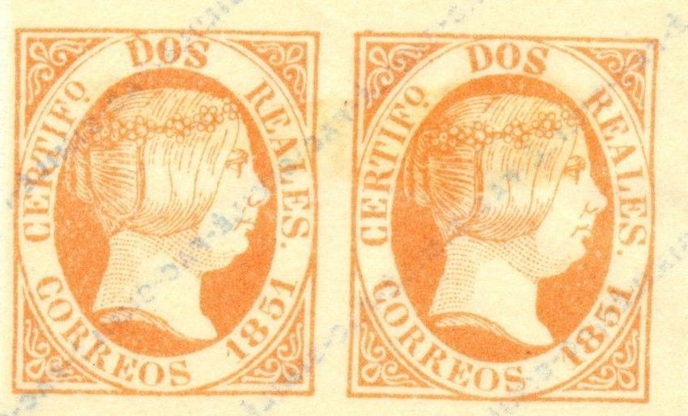
Fournier forgeries as taken from a Fournier Album.
Return To Catalogue - Spain overview
Note: on my website many of the
pictures can not be seen! They are of course present in the
catalogue;
contact me if you want to purchase it.
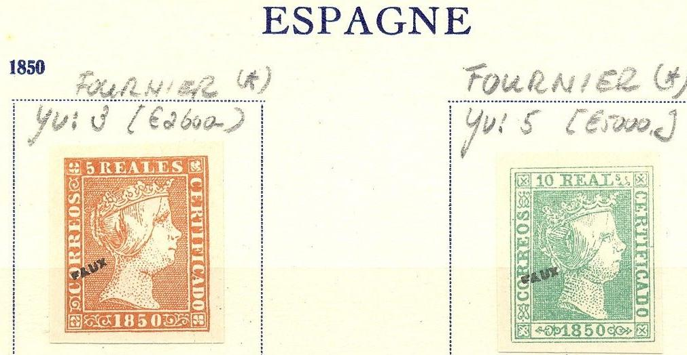
Forgeries taken from a Fournier Album.

Fournier forgeries as taken from a Fournier Album.
In 'The Fournier Album of Philatelic Forgeries' forgeries of all values can be found. The 'Reales' values do not have a dot below the 'DO' in the upper inscription in these forgeries. The '5' of '1852' has a shorter topstroke than in the genuine stamps. The 6 rs value has the '6' very large compared to a genuine stamp. In his 1914 pricelist Fournier offers all 5 values for 5 Swiss Francs (as first choice forgeries). In the Fournier forgeries, the piece of hair (or is it a ribbon?) above the 'S' of 'CORREOS' is more squarish than in the genuine stamps. There are also minor differences in the '5' (upper part more curved in the forgery).

(I've been told that the above 12 cs stamps are also Fournier
forgeries)
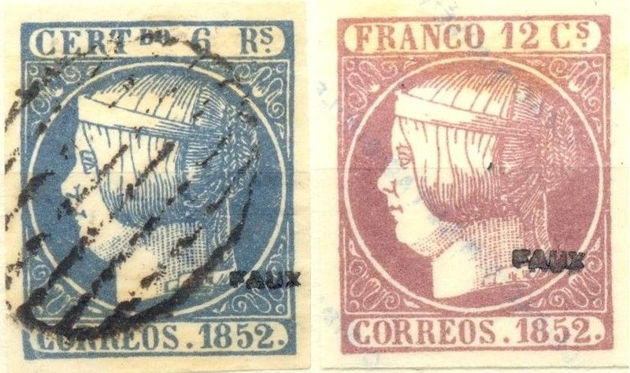


Forgeries taken from a Fournier Album of forgeries.
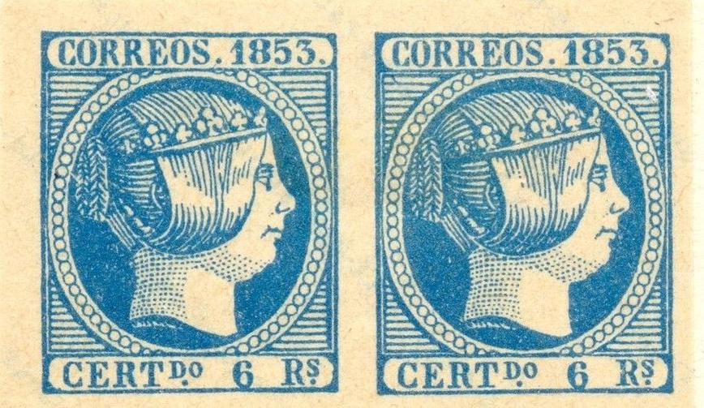
Fournier forgeries, taken from a Fournier Album. These forgeries
are rather deceptive, but the shading of the hair is slightly
different from the genuine stamps according to the Serrane Guide
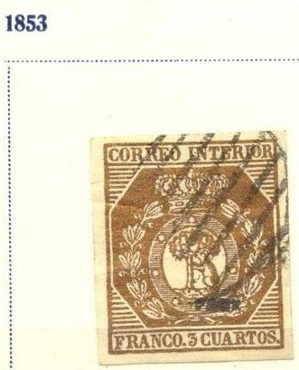
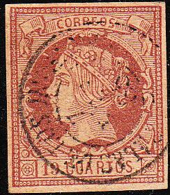
This forgery of the 19 c value has the 'SALAS DE LOS INFANTES
BURGOS 7 FEB 65' cancel as shown in the Fournier Album.
Fournier forgery as shown in a Fournier Album.
A Fournier forgery taken from a Fournier Album. The right hand
side of the '4' of '1864' does not end vertically as in the
genuine stamps. According to the Serrane guide, the cancel 'SALAS
DE LOS INFANTES 7 FEB 65 BURGOS' was used on these stamps (the
word 'SALAS' looks more like 'CALAC').
Images taken from a Fournier Album.


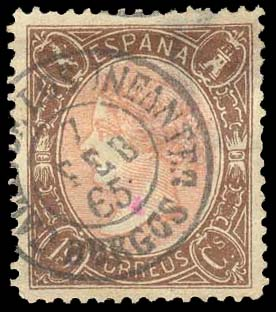

In the 19 c forgeries, the nose of the Queen appears to be too
pointed when compared to a genuine stamp
The above Fournier forgeries have the cancel 'SALAS DE LOS INFANTES BURGOS 7 FEB 65' (first three images, the word 'SALAS' looks more like 'CALAC') or 'CAMPILLOS 8 OCT 66 MALAGA' as they can be found in 'The Fournier Album of Philatelic Forgeries'.

Fournier forgeries from a Fournier Album.
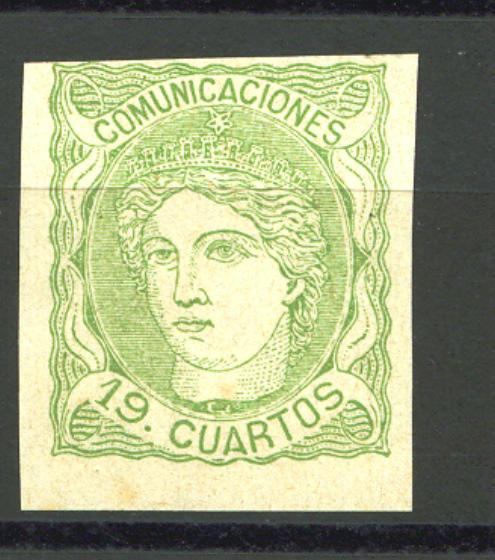
Fournier forgery of the 1870 woman's head 19 c stamp? The star on
top of the crown is also not symmetric in this forgery.

2 Escudos and 1.600 Esc forgeries as found in the Fournier Album.
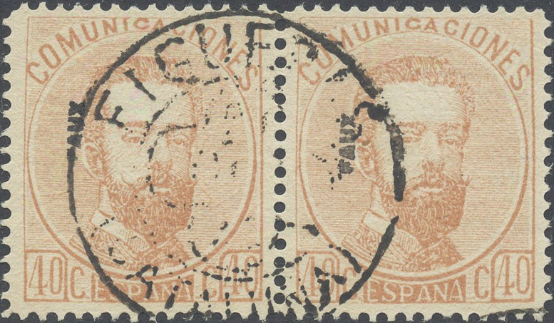


(Fournier forgeries of the lower values)

Block of 50 c imperforate Fournier forgeries, taken from a
Fournier Album.
(Imperforate row of 1 P Fournier forgeries)
The above 50 c stamp is a Fournier forgery. It bears the cancel 'PUYCERDA 7 JUL 73 (CATALUNIA)' as it also can be found in 'The Fournier Album of Philatelic Forgeries'. Fournier made forgeries of the all values (Peseta values included). He also used the cancel 'FIGUERAS 21 OCT 73 CATALUNA' as in the two 40 c forgeries above. I have also seen the 25 c value with a very blotched cancel. He offers the cents values (9 stamps) for 2 Swiss Francs in his 1914 pricelist (as first class forgeries). The Peseta values (3 stamps) are also offered for 2 Swiss Francs (also first class forgeries). The first 'O' of 'COMUNICACIONES' is not flat at the bottom in this forgery. In the genuine stamps, the line just below the upper frameline, does not continue as much as the lines below it do. In the Fournier forgery, it continues as far as the other lines. I suspect the 6 c forgeries also to be Fournier forgeries (note the strange left '6').
A forgery of the 4 P stamp, possibly also made by Fournier (the
stamp has a FIGUERAS cancel). In all the genuine stamps I have
seen the 'A' of 'CUATRO' is situated well to the left of the '.'
of 'ESP.'. However, in my opinion, in Fournier's forgeries, this
letter is situated almost below the dot. The genuine Peseta
stamps have a reinforcement in the lower left corner; Fournier
forgeries do not have this.


Fournier forgeries from a Fournier Album, unfinished imperforate
forgeries and perforted cancelled forgeries.
Fournier made a forgery of the 10 P value.
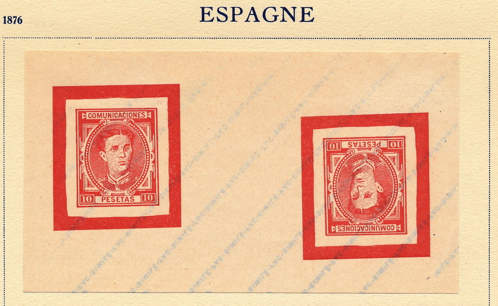
Unfinished Fournier forgeries of the 10 P value as found in the
Fournier Album. The design is clearly not as detailed as the
genuine stamp.
Fournier made forgeries of the 4 P and 10 P babyface values; according to the Serrane Guide they exist with a rectangluar cancel 'CERTIFICADO 14 MAYO 9 COROGNA' and the word 'PESETAS' is touching the line below it:

In the Fournier Album of Philatelic Forgeries a forgery of the 1 R 1873 stamp and 50 c and 1 R of the 1874 issue can be found. I presume that all of these are actually Spiro forgeries that were merely sold by Fournier.
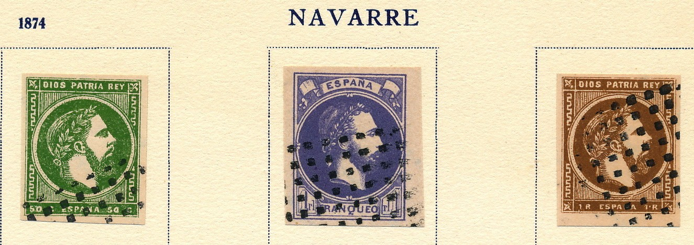
Here some Spiro forgeries which were pasted in a Fournier Album;
this indicates that Fournier also sold Spiro products.
Overprints, reduced size
Cancels, reduced sizes
Stamps - Briefmarken - Timbres-Poste - Postzegels - Francobolli - Estampillas


{kind=link}
{kind=link}
{kind=link}
{kind=link}
{kind=link}
{kind=link}
{kind=link}
{kind=link}
{kind=link}
{kind=link}
{kind=link}